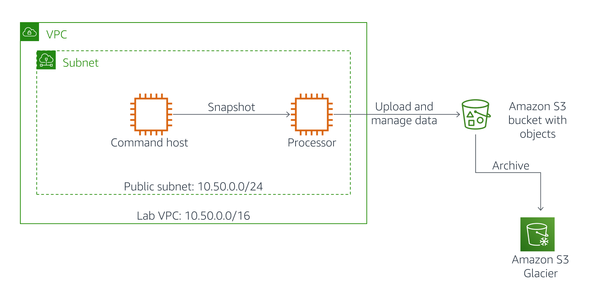

This lab is divided into two parts:
In the Task portion of this lab, you will create:
In the Challenge portion of this lab, you will be challenged to synchronize contents of a local directory to an Amazon S3 bucket
Objectives After completing this lab, you will be able to:
Duration
This lab will require approximately 45 minutes to complete.
At the top of these instructions, click Start Lab to launch your lab.
A Start Lab panel opens displaying the lab status.
Wait until you see the message "Lab status: ready", then click the X to close the Start Lab panel.
At the top of these instructions, click AWS
This will open the AWS Management Console in a new browser tab. The system will automatically log you in.
Tip: If a new browser tab does not open, there will typically be a banner or icon at the top of your browser indicating that your browser is preventing the site from opening pop-up windows. Click on the banner or icon and choose "Allow pop ups."
Arrange the AWS Management Console tab so that it displays along side these instructions. Ideally, you will be able to see both browser tabs at the same time, to make it easier to follow the lab steps.
Please do not change the Region during this lab.
Scenario
Your lab environment (pictured below) consists of an Amazon VPC instance called Lab VPC, which currently contains a single public subnet. Amazon EC2 instances named Command Host and Processor have already been created for you as part of this lab.
The Command Host will be used to administer AWS resources including the Processor.
In this task, you will configure AWS CLI installed on the Command Host to create Amazon EBS volume Snapshots for an instance labelled as Processor. You will then set up processes on the instance for retrieving data from and uploading data to Amazon S3.

In this subtask, you will create an Amazon S3 bucket
On the AWS Management Console, on the Services menu, click S3.
Click Create bucket.
In the Create bucket dialog box, configure:
Click Create bucket.
In this section you will attach a pre-created IAM Role as an Instance Profile to the Processor Host, giving it the permissions to interact with your Amazon S3 bucket.
S3BucketAccess role under IAM role.
In this section, you will learn how to use the AWS Command Line Interface (CLI) to manage the processing of snapshots of an instance.
Your AWS account is limited in any region to holding 10,000 snapshots. Furthermore, you are charged every month per gigabyte of snapshot data that you store. This charge is minimized by the fact that AWS takes incremental snapshots of your instances after the first snapshot, and also by the fact that snapshot data is compressed. However, to optimize both maintenance and cost, we recommend that you monitor the number of snapshots stored for each instance and routinely delete old snapshots that you no longer need.
The following instructions now vary slightly depending on whether you are using Windows or Mac/Linux.
These instructions are for Windows users only.
If you are using macOS or Linux, skip to the next section.
In the AWS Management Console, on the Services menu, click EC2.
In the left navigation pane, click Instances.
Select the Command Host.
Copy the IPv4 Public IP from the Description in the lower pane.
Read through the three bullet points in this step before you start to complete the actions, because you will not be able see these instructions when the Details panel is open.
Download needed software.
Open putty.exe
Configure PuTTY to not timeout:
30This allows you to keep the PuTTY session open for a longer period of time.
Configure your PuTTY session:
Click Yes, to trust the host and connect to it.
When prompted login as, enter: ec2-user
This will connect you to the EC2 instance.
These instructions are for Mac/Linux users only. If you are a Windows user, skip ahead to the next task.
In the AWS Management Console, on the Services menu, click EC2.
In the left navigation pane, click Instances.
Select the Command Host.
Copy the IPv4 Public IP from the Description in the lower pane.
Read through the three bullet points in this step before you start to complete the actions, because you will not be able see these instructions when the Details panel is open.
Open a terminal window, and change directory cd to the directory where the labsuser.pem file was downloaded.
For example, run this command, if it was saved to your Downloads directory:
cd ~/DownloadsChange the permissions on the key to be read only, by running this command:
xxxxxxxxxxchmod 400 labsuser.pemReturn to the terminal window and run this command (replace <public-ip> with the Public IPv4 value you copied to your clipboard earlier in the lab):
xxxxxxxxxxssh -i labsuser.pem ec2-user@<public-ip>Type yes when prompted to allow a first connection to this remote SSH server.
Because you are using a key pair for authentication, you will not be prompted for a password.
In this procedure, you will take an initial snapshot of the Processor instance.
To take a snapshot, you will use the aws ec2 create-snapshot command. Because this command takes a volume ID, you will first need to find the volume ID for the Amazon EBS volume attached to your Processor instance. To do this, use the aws ec2 describe-instances command.
The aws ec2 create-snapshot command will take a snapshot of your disk at the time that the command was issued; subsequent writes to the disk are not included in the snapshot. However, due to application and OS write caching, a snapshot on a running instance might be inconsistent and result in missing or corrupted data. Therefore, before taking the snapshot of the Processor instance, you will shut it down. This ensures a consistent snapshot.
If you are taking a snapshot of a secondary (non-root) Amazon EBS volume, you can also unmount the volume before taking a snapshot to ensure that you get a consistent copy. To back up database systems (e.g., MySQL), you can freeze the file system to suspend write operations or enable replication and take periodic backups of your read replica.
To get a full description of the Processor instance, copy the following command and run it from within your instance:
xxxxxxxxxxaws ec2 describe-instances --filter 'Name=tag:Name,Values=Processor'This command uses the --filter tag to limit the results description to the new instance that you created in the previous section. The command will respond with a full, JSON-based description of the instance and all of its attributes. You will now modify this command to return just the subset of data—the Amazon EBS volume information—that you are interested in.
To narrow down the results of the previous command further, copy the following command and run it from within your instance. If the command returns null, change Reservations[0] to Reservations[1]:
xxxxxxxxxxaws ec2 describe-instances --filter 'Name=tag:Name,Values=Processor' --query 'Reservations[0].Instances[0].BlockDeviceMappings[0].Ebs.{VolumeId:VolumeId}'This modified command uses the --query attribute to specify a JMESPath query that returns only the volume ID of the only volume (the root volume) attached to the Processor instance. You should receive a response similar to this:
{
"VolumeId": "vol-1234abcd"
}
This value will be referred to as volume-id in subsequent commands.
Before taking a snapshot, you will shut down the Processor instance, which requires its instance ID. To obtain the instance ID, copy the following command and run it from within your instance. If Reservations[0] was changed to Reservations[1] in the previous step, Reservations[0] will need to be changed to Reservations[1] for the next command:
xxxxxxxxxxaws ec2 describe-instances --filters 'Name=tag:Name,Values=Processor' --query 'Reservations[0].Instances[0].InstanceId'This value will be referred to as instance-id in subsequent commands.
To shut down the Processor instance, copy the following command, replace INSTANCE-ID with your instance id, and run it from within your instance:
xxxxxxxxxxaws ec2 stop-instances --instance-ids INSTANCE-IDBefore moving to the next step in this procedure, verify that the Processor instance has stopped by running the following command, replacing INSTANCE-ID with your instance id. When the Processor instance has stopped, the command will return to a prompt.
xxxxxxxxxxaws ec2 wait instance-stopped --instance-id INSTANCE-IDTo create your first snapshot of the root volume of your Processor instance, copy the following command, replace VOLUME-ID_ with your volume id, and run it in your SSH window:
xxxxxxxxxxaws ec2 create-snapshot --volume-id VOLUME-IDThe command will return a set of information that includes a SnapshotId value that uniquely identifies the new snapshot. This value will be referred to as snapshot-id in subsequent commands.
To check the status of your snapshot, copy the following command, replace SNAPSHOT-ID your snapshot-id, and run it in your SSH window:
xxxxxxxxxxaws ec2 wait snapshot-completed --snapshot-id SNAPSHOT-IDContinue with the below procedure when the command completes.
To restart the Processor instance, copy the following command, replace the INSTANCE-ID to your instance id and run it in your SSH window:
xxxxxxxxxxaws ec2 start-instances --instance-ids INSTANCE-IDTo check on the status of the restart operation, copy the following command, replace INSTANCE-ID with your instance id, and run it in your SSH window:
xxxxxxxxxxaws ec2 wait instance-running --instance-id INSTANCE-ID
Using the Linux scheduling system (cron), you can easily set up a recurring snapshot process so that new snapshots of your data are taken automatically.
For the purposes of this lab, you will schedule snapshot creation every minute so that you can verify the results of your work. In the next procedure, you will use automation to manage the number of snapshots that are maintained for a volume.
Note This section of the lab does not stop the instance in order to create a large number of snapshots for the next procedure. If you need to guarantee consistency, you can develop a fuller automation script that shuts down the instance or quiesces the disk first, as discussed in Task 2.
To create a cron entry that will schedule a job that runs every minute, copy the following command, replace VOLUME-ID with your volume-id and run it from within your instance:
xxxxxxxxxxecho "* * * * * aws ec2 create-snapshot --volume-id VOLUME-ID 2>&1 >> /tmp/cronlog" > cronjobTo schedule this cron task, copy the following command and run it from within your instance:
xxxxxxxxxxcrontab cronjobNote: This will take 1-2 minutes
To verify that subsequent snapshots are being created, copy the following command, replace <volume-id> with your volume-id and run it from within your instance:
xxxxxxxxxxaws ec2 describe-snapshots --filters "Name=volume-id,Values=<volume-id>"After a few minutes, you should ideally see one or more Snapshots. If this is not working as expected, please request assistance from your instructor.
Wait a few minutes so that a few more snapshots will be generated before beginning the next task.
In this procedure, you will run a Python script that maintains only the last two snapshots for any given Amazon EBS volume associated with your account.
As discussed at the beginning of this section, aggressive snapshot management both limits your costs and simplifies management over time. Using a few lines of code, you can leverage one of the many AWS Software Development Kits (SDKs) to create a program that deletes unnecessary snapshots.
Use the following command to stop the cron job that you previously created:
xxxxxxxxxxcrontab -rIn the home directory of your CommandHost instance is a file named snapshotter_v2.py. Examine it with the following command:
xxxxxxxxxxmore snapshotter_v2.pyThis command is a simple script written in the Python programming language using Boto (version 3), the Python SDK for AWS. The AWS CLI is also written in Boto, which makes writing Python-powered AWS scripts very convenient because Boto is pre-installed on most Amazon EC2 Linux instances.
The script finds all Amazon EBS volumes associated with the current user’s account and takes snapshots of them. It then examines the number of snapshots associated with the volume, sorts the snapshots by date, and removes all but the two most recent snapshots.
Before running snapshotter_v2.py, copy the following command and run it from within your instance (replacing VOLUME-ID with your volume-id):
xxxxxxxxxxaws ec2 describe-snapshots --filters "Name=volume-id, Values=VOLUME-ID" --query 'Snapshots[*].SnapshotId'You should see multiple snapshot IDs returned for the volume. These are the snapshots that were created by your cron job before you terminated it.
Run the snapshotter_v2.py script:
xxxxxxxxxxpython3 snapshotter_v2.pyThe script should run for a few seconds, and then return a list of all of the snapshots that it deleted:
[ec2-user@ip-\*]$ python3 snapshotter_v2.py
Deleting snapshot snap-e8128a20
Deleting snapshot snap-d0d34818
Deleting snapshot snap-ded14a16
Deleting snapshot snap-e8d74c20
Deleting snapshot snap-25d54eed
Deleting snapshot snap-4acb5082
To examine the new number of snapshots for the current volume, re-run the command from the procedure above:
xxxxxxxxxxaws ec2 describe-snapshots --filters "Name=volume-id, Values=<volume-id>" --query 'Snapshots[*].SnapshotId'You should see only two snapshot IDs returned.
Quit your SSH connection of Command Host.
In this section, you will be challenged to synchronize the contents of a directory with your Amazon S3 bucket.
Note If you are already familiar with AWS, we recommend that you try this challenge yourself using the information provided in this section before reading the detailed solution provided in the next section. When you have completed the challenge, check your work by reviewing the detailed solution.
Challenge Description
Run this command on the EC2 instance to download a sample set of files:
xxxxxxxxxxwget https://aws-tc-largeobjects.s3.us-west-2.amazonaws.com/CUR-TF-100-RESTRT-1/183-lab-JAWS-managing-storage/s3/files.zipUnzip these files, and then, using the AWS CLI as much as possible, figure out how to accomplish the following:
Hints: You can use the aws s3api command to enable versioning on an Amazon S3 bucket.
Solution Summary
The solution involves the following steps:
aws s3api put-bucket-versioning command.aws s3 sync command on the local folder.--delete option to aws s3 sync.aws s3api list-object-versions and aws s3api get-object commands. You can then restore the file to Amazon S3 by using another call to aws s3 sync.
The sample file package contains a folder with three text files: file1.txt, file2.txt, and file3.txt. These are the files that you will synchronize with your Amazon S3 bucket.
Login to the Processor instance.
To download the sample files on the Processor instance, copy the following command and run it from within your instance:
xxxxxxxxxxwget https://aws-tc-largeobjects.s3.us-west-2.amazonaws.com/CUR-TF-100-RESTRT-1/183-lab-JAWS-managing-storage/s3/files.zipTo unzip the directory, use the following command:
xxxxxxxxxxunzip files.zip
Before synchronizing content with your Amazon S3 bucket, you will need to enable versioning on your bucket. To enable versioning, copy the following command (replacing S3-BUCKET-NAME with your bucket name) and run it from within your instance:
xxxxxxxxxxaws s3api put-bucket-versioning --bucket S3-BUCKET-NAME --versioning-configuration Status=Enabled
To synchronize the contents of the files folder with your Amazon S3 bucket, copy the following command (replacing S3-BUCKET-NAME with your bucket name) and run it from within your instance:
xxxxxxxxxxaws s3 sync files s3://S3-BUCKET-NAME/files/The command should confirm that it has copied each of the three files to your Amazon S3 bucket.
To confirm the state of your files, use the following command (replacing S3-BUCKET-NAME with your bucket name):
xxxxxxxxxxaws s3 ls s3://S3-BUCKET-NAME/files/To delete one of the files on the local drive, use the following command:
xxxxxxxxxxrm files/file1.txtTo delete the same file from the server, use the --delete option to the aws s3 sync command. Copy the following command (replacing S3-BUCKET-NAME with your bucket name) and run it from within your instance:
xxxxxxxxxxaws s3 sync files s3://S3-BUCKET-NAME/files/ --deleteNote Depending on the version of the AWS CLI that you are using, you may see the following error:
delete failed: s3://custombucketname/files/file2.txt 'str' object has no attribute 'text'
This is simply a parsing response error that exists in a single version of the AWS CLI; as you will confirm in the next step, the file has successfully been deleted in spite of this error.
Verify that the file was deleted remotely on the server:
xxxxxxxxxxaws s3 ls s3://S3-BUCKET-NAME/files/Now, try to recover the old version of file1.txt. To view a list of past versions of this file, use the aws s3api list-object-versions command:
xxxxxxxxxxaws s3api list-object-versions --bucket S3-BUCKET-NAME --prefix files/file1.txtThe output will contain a DeleteMarkers and a Versions block. DeleteMarkers indicates where the delete marker is; i.e., if you perform an aws s3 rm operation (or an aws s3 sync operation with the --delete option), this is the next version that the file will revert to.
The Versions block contains a list of all available versions. You should have only a single Versions entry. Find the field VersionId and copy its value; we will refer to this as version-id in the next step.
Because there is no direct command to restore an older version of an Amazon S3 object to its own bucket, you will need to re-download the old version and then sync again to Amazon S3. To download the previous version of file1.txt, copy the following command (replacing VERSION-ID with your version-id and S3-BUCKET-NAME with your bucket name) and run it from within your instance:
xxxxxxxxxxaws s3api get-object --bucket S3-BUCKET-NAME --key files/file1.txt --version-id VERSION-ID files/file1.txtTo verify that the file has been restored locally, use the following command:
xxxxxxxxxxls filesTo re-sync the contents of the files/ folder to Amazon S3, copy the following command (replacing S3-BUCKET-NAME with your bucket name) and run it from within your instance:
xxxxxxxxxxaws s3 sync files s3://S3-BUCKET-NAME/files/Finally, to verify that a new version of file1.txt has been pushed to Amazon S3, copy the following command (replacing S3-BUCKET-NAME with your bucket name) and run it from within your instance:
xxxxxxxxxxaws s3 ls s3://S3-BUCKET-NAME/files/
Congratulations! You have completed the lab.
Click End Lab at the top of this page and then click Yes to confirm that you want to end the lab.
A panel will appear, indicating that "DELETE has been initiated... You may close this message box now."
Click the X in the top right corner to close the panel.
For more information about AWS Training and Certification, see https://aws.amazon.com/training/. Your feedback is welcome and appreciated. If you would like to share any suggestions or corrections, please provide the details in our AWS Training and Certification Contact Form. © 2022 Amazon Web Services, Inc. and its affiliates. All rights reserved. This work may not be reproduced or redistributed, in whole or in part, without prior written permission from Amazon Web Services, Inc. Commercial copying, lending, or selling is prohibited.